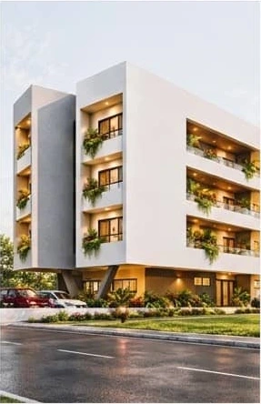
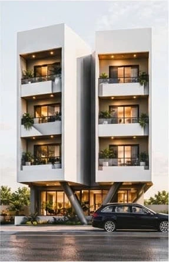
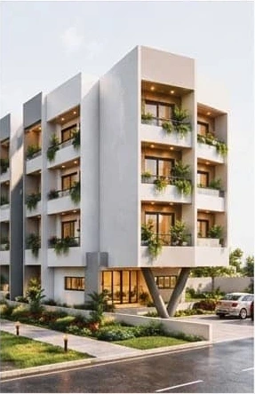

Habitat
Maisons et logements collectifs pensés autour des usages quotidiens et des caractéristiques du terrain.
Bafoussam, Cameroun
Placide Mekui et son équipe conçoivent des lieux adaptés à leurs usages, à leur site et aux ressources locales.
Parlons de votre projet
Projet à la une
Trois perspectives pour lire le même projet. Les balcons en retrait, les accès au rez-de-chaussée et les piliers obliques donnent sa forme à l’ensemble.


Services
L’atelier réunit architectes, ingénieurs et chercheurs pour concevoir des projets adaptés à leur contexte.
Maisons et logements collectifs pensés autour des usages quotidiens et des caractéristiques du terrain.
Complexes commerciaux et aménagements urbains où les accès, les circulations et les usages guident le plan.
Recherche et développement sur les matériaux locaux et les techniques constructives, de la terre comprimée à l’adaptation de savoir-faire traditionnels.
Fondateur et architecte principal
Placide a découvert la construction et la brique de terre comprimée dans la briqueterie familiale. Diplômé de l’Institut des Beaux-Arts de Foumban, il a poursuivi ses études en design d’innovation sociale à l’ESA Saint-Luc à Bruxelles.
Il dirige Les Ateliers JPM à Bafoussam et préside InnovTerre, une association qu’il a cofondée pour valoriser les matériaux naturels et transmettre les techniques de construction adaptées aux réalités locales.
LinkedInBafoussam, Cameroun
Écrivez-nous ou appelez l’atelier. Pour commencer, indiquez le lieu, le type de projet et l’étape où vous en êtes.